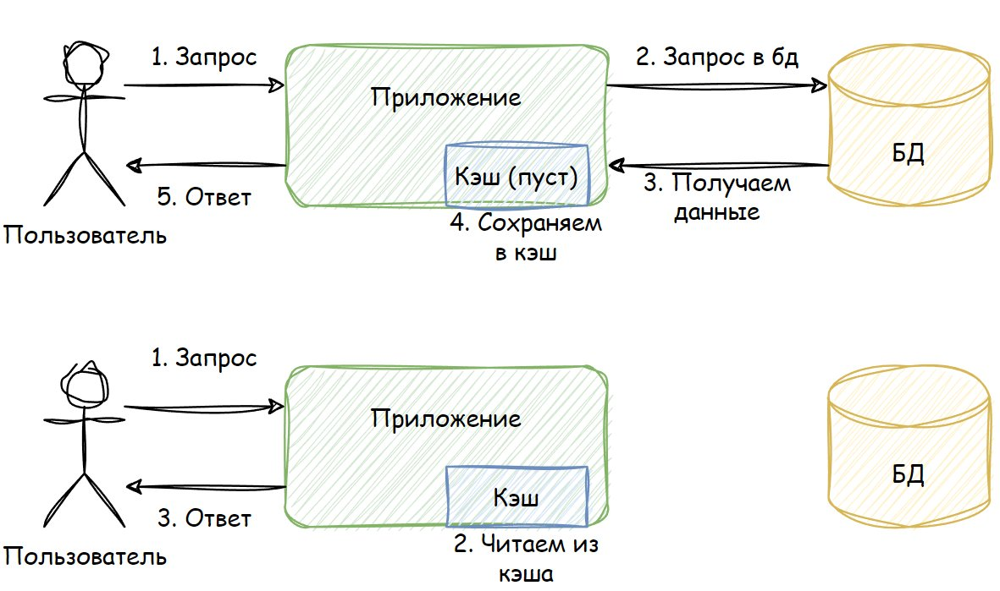
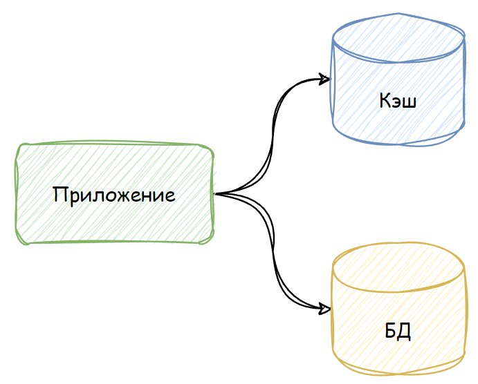

Кэш — это память программы или устройства, которая сохраняет временные или часто используемые файлы для быстрого доступа. Умение работать с кэшем — необходимый навык тестировщика.
Кэшей бывает несколько — они есть на каждом уровне модели OSI. Но чаще всего тестировщик сталкивается с браузерным кэшем.
Пример работы браузерного кэша — прогресс-бар видеоплеера:
Голубая часть — уже просмотрено, серая — загрузилось в кэш, тёмная — ещё не загрузилось

Первый запрос: данные берутся из БД и сохраняются в кэш. Второй запрос: данные берутся прямо из кэша, БД не обращается.

Приложение может обращаться как к кэшу (быстро), так и к основной БД
Браузер может хранить старые JS-файлы или картинки. Когда на сайт выгрузят новую версию — браузер продолжит брать данные из своего кэша и некорректно отобразит сайт. Перед тестированием нового функционала — чисти кэш!